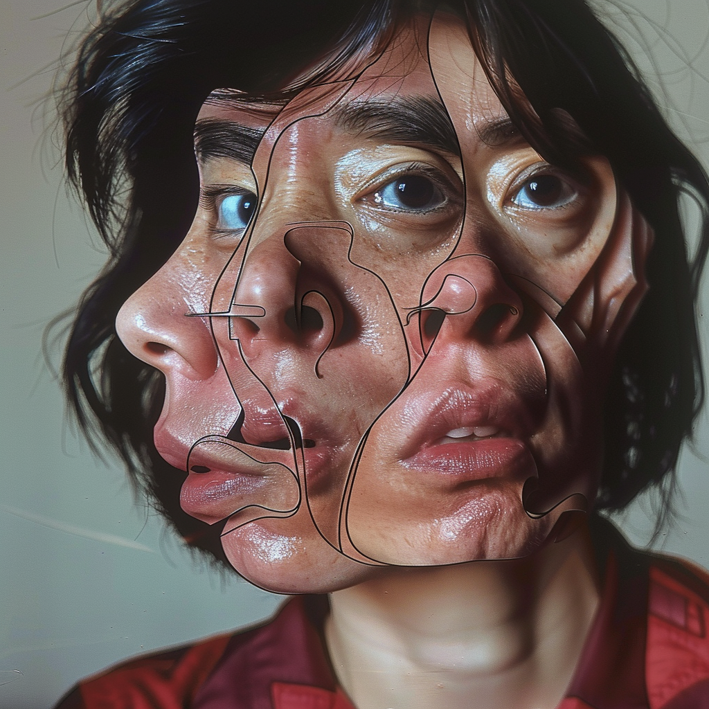
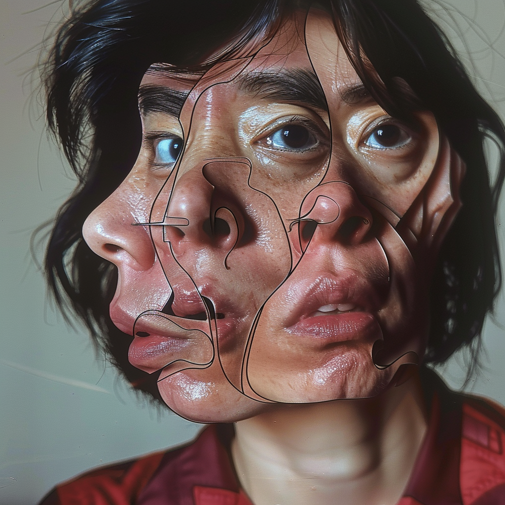

Fragments of Humanity
This introspective series explores themes of vulnerability, identity, and memory through the lens of AI-assisted post-photography. Each image is a fragment—visually and symbolically—capturing the fractured self in the digital age. While created with generative tools, the series is deeply human, rooted in emotional truth.


 

üîç View the full project on
Transient Labs